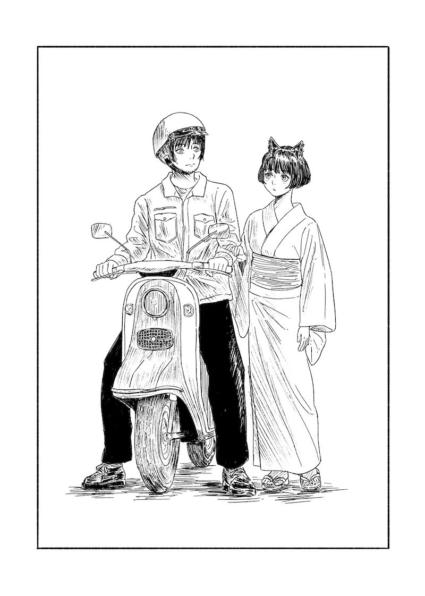
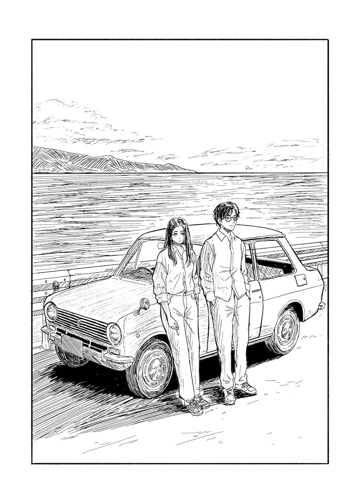

猫耳少女/三上夏帆物語

イラスト：長井遥之/文:Podzol
猫耳少女 1
2150年

朝から空には厚い雲が垂れ込めていたが、夕方になると雲の隙間からわずかに日が顔をのぞかせ、雲は透き通るようなオレンジ色で照らされて鮮やかなグラデーションを成した。まるでそれが合図であったかのように工場建物の大屋根に建つ時計塔が十七時のチャイムを響かせ、一日の業務の終了が告げられた。
私は適当なところで手元の作業をやめ、脱衣所へ向かった。鉄粉と機械油で真っ黒に汚れた作業服を脱いで勢いをつけて振るうと服の繊維に付着していた鉄粉が宙に舞い、夕日がそれにきらきらと反射して一瞬綺麗だと思った。脱衣所脇の洗面台、蛇口を捻ると茶色い水が噴出した。水道管が腐っていて錆汁が溶け込んでいるのだ。濁った水で手を洗い爪の間に入り込んだ油を落とす。顔を上げると鏡にはつい先ほど牢獄から出てきましたというような疲れ切った男の顔が写っていた。鏡から顔を背け作業着を丸めてカバンに詰め込み、ロッカーに入れておいた私服に着替える。ほどなくして夕日も落ちきり、薄暗くなった脱衣所から一人、また一人と私と同じような作業員が姿を消していった。
バイクに跨り港湾道路を走ると、崩壊した構造物が多く目につく。倒れかけたまま放置された信号機、自動車か何かがそのまま放置されたのか鉄屑の塊が道路脇に捨てられていて、そこから夥しい量の錆汁が流れ出して路面を汚している。路面も所々陥没している。注意を促す看板は立てられているものの色褪せており、修繕するつもりもする体力ももはや残っていないという雰囲気だった。著しい人口減少と経済停滞を経て、この国の生活水準はおおよそ200年前の1950年代まで逆戻りしていた。繁栄時代に築かれた頑丈な公営住宅やインフラ施設を騙し騙し使い続けてきたが、それもとうに限界を超えているのだ。
ふと、同居人から帰り際にアイスクリームを買ってくるように頼まれていたことを思い出し、途中の商店へ立ち寄った。
「アイスクリームか」と一人呟いて笑う。荒廃したこの国でも、港湾地区はまだマシな方なのだ。なにせ製鉄所があるおかげで石油資源が定期的に供給されており、発電所も稼働している。電気があれば灯りが点る。冷蔵庫も動く。冷蔵庫も動く。この時代で、これほどにインフラ網が生きている街も珍しいことだろう。
商店に入ると冷蔵庫が稼働するブーンという音がやる気なさげに響いていた。ガラス扉を開けて商品を取り出したあと、衣服用の洗剤が切れていたことも思い出しついでに持ってカウンターへ向かった。
「またあの子の分かい？」レジを打ちながら初老の店主はアイスを見てそう声をかけてきた。
「夏になるとこればっかり頼まれて」と私は笑った。
「まだ六月だから、今年は去年よりも少し早いんじゃないかい？」と店主はアイスと洗剤を手際よく紙で包みながら呟く。包み終わると、メガネ越しにじろりとこちらを見て「アイス買いに来るの」と付け加えた。
「そんな、梅雨入りの予報みたいな」と私はもう一度笑った。
貧しいながらも、我々はそれぞれの日常を送っているのだった。そもそも貧しいなどと思うこともなく、これが当たり前だと思って生きている人の方が多いかもしれない。店を後にし、バイクを家路へ向かい走らせながらそのようなことを思った。
私が何かにつけてこう世の中を観察する癖がついたのは、紛れもなく本日今季初めてのアイスを所望してきた同居人の影響によるところが大きかった。彼女は私の腐り切った日常にまるで彗星のごとく現れ、そして何が気に入ったのか私の生活にするりと入り込み、家に居座るようになった。そして何かにつけてあれこれと世の中のことを説明しては「昔はもっと便利だったんだよ」と笑った。
彼女は随分と幼い見た目をしていて、私よりもずっと年齢も若いはずだった。それなのにいつも古い時代の本を読んでいた。背表紙が擦り切れ、紙も劣化してよく読めないような本を彼女は大切そうに読み、読み終わってはその内容を楽しそうに私に話した。本の話をしている時以外はたいてい日常の何ということのない話や、彼女自身の思い出なんかを話していた。
港湾道路はやがて急傾斜の坂道になり、周囲にコンクリート造の公営団地が見られるようになる。公営団地といってもそれらが建てられたのは一世紀以上も昔で、今や誰が管理しているのかもよく分からない。経済停滞により半ば廃墟と化していた建物群へいつからか私のような港湾地区で働く賃労働者が流れ着き、公営団地は廃墟から一転して無法地帯となった。
坂道の行き止まり、無数にバイクや自転車が並ぶ一角に私も自分の愛車を停め、脇の階段を駆け上がって居住区へと向かう。敷地内にはあちこちに私物が散乱し建物の構造も真改造されている。
「おーい….」渡り廊下を歩いていると頭上から呼び止めるというわけでもなく間延びしたような声が聞こえ、顔を上げた。見ると誰かが家具でも拾ってきたのか屋上に近い階の窓が開け放され、そこからロープが垂らさればかに大きい荷物が引き上げられているところだった。
落ちてきてはたまらないので足早に通り抜ける。各々が勝手なコミュニティを形成しつつ、それなりに日常を送っているのだ。
渡り廊下を抜けた先の部屋が私の住まいだった。
扉を開けて足の踏み場のない玄関を飛び越える。薄暗い部屋の奥の布団のふくらみに向かって「帰ったよ」と声をかけた。布団の膨らみはしばらくもぞもぞと動いたあとで「アイスは？」とくぐもった声で返事を返した。
「ほら、買ってきたからさ」と言って布団の脇にアイスを置き、台所からスプーンを持ってきて隣に置いた。
「今年は去年よりも買いに来るのが早いんじゃないかって店のおじちゃんが笑ってたよ」と付け加えた。
「だって暑いんだもん……」彼女はようやく布団から顔を覗かせアイスに手を伸ばす。
「暑いなら布団なんかに入ってないでさ」と私は言ったが、彼女はそのよく澄んだ細い目で私を鋭く見たあと「だって、暑いよりも日差しが苦手なんだもん」と呟いた。
「先、風呂入ってるよ」そう言って私は上着をまとめて洗濯機に放り込み、風呂場へ向かった。
彼女がアイスの包みを捲る音が聞こえる。「んえぇ、溶け始めてる……」
呟く声を背中で聞きつつ、私は風呂場の扉を閉めた。
三上夏帆 1
2025年
「やだ、溶け始めてる……」
待ち時間で並んでいる間に大部分が溶けてしまったと予想されるアイスクリームを机の上に置いてみたが、その包みを指でつまんだときのぷにぷにとした感覚から内部が殆ど液体であると察した。
東海道新幹線「のぞみ」博多行き、車内。平日金曜の午後、車内は比較的空いているようだったが予約を取ろうと思ったときには既に窓側の席は埋まってしまっていた。通路側は手洗いに行きやすいし良いかなどと前向きに受け止めつつ、数年ぶりの帰省路に着いたのだ。ビニール袋を探ってスプーンを取り出してから、液体になったアイスクリームがこぼれ落ちないように注意しながらゆっくりと掬って口に運ぶ。側から見れば相当にまぬけた格好になっているはずだったが、隣の席の若いサラリーマン風の男は相当に疲れているのか、列車が出発する前からすでに深く眠り込んでいるようだった。アイスクリームは途中でやはり数滴こぼしてしまったので鞄からハンカチを取り出して膝の上に置き、最初からこうしておけばよかったと思った。
しばらくのちに案内放送があり列車は音もなく出発した。車窓には都心風景が高速で展開される。古びたコンクリートのモノレールや、室外機が無限個数並んでいるマンション、再開発中のどこかの駅といった風景が次々と現れては消えていった。私はそれを眺めつつアイスクリームを口に運んだ。
アイスクリームを食べ終わったあといつのまにか眠り込んでいたようで、目を覚ますと窓の外には田園地帯が広がっていた。分厚い雲が垂れ込めた空のもとで、つい先日田植えをしたばかりというふうに水をたっぷりと湛えた水田が区画整理された住宅街さながらに並んでいる。そのような車窓風景を眺めているうちに、水田地帯はソーラーパネルに変わり、そして住宅街になった。住宅街を眺めているとそのなかに背の高いビルがぽつぽつと現れ、地鉄の駅のようなものが見え、そしてその駅前を通り過ぎてしまうとまたソーラーパネルが現れ、風景は水田地帯へ戻った。ここはどのあたりなのだろうかと考えていると、遠くの工場に近江と書かれているのが目に入り、滋賀県であることが分かった。
隣を見るとサラリーマンは相変わらず熟睡していた。これは終点まで行ってしまうかもしれないなと思いつつ時計を見て、広島までの残り時間を確認してもう一眠りすることにした。
広島へ着いたのは十七時を少し過ぎた時間だった。
今夜は広島に住んでいた頃の友人の家に泊めてもらえることになっていた。彼女の家は広島市街から少し南へずれたところにあるアパートで、そのあたりへは路面電車でアクセスできるはずだった。私は慣れない駅構内をぐるぐる巡ったあと街がよく見渡せる路面電車乗り場の外れで時間を潰すことにした。駅前が再開発で大分変わっているとは聞いていたものの、実際に目の前にするとこれがあの見慣れ広島駅なのかと驚く。まだ工事中なのか駅前にはフェンスで囲われた区画がいくつかあり、クレーンや重機といった工事車両がその中に点在していた。
風景を眺めつつ、私は先ほど新幹線を降りる時のことを思い返した。荷物棚にあげておいた紙袋などを取り出すために背伸びした時、サラリーマンが窓際に置いているチケットに目が入り、私と同じ広島で降りることに気づいたのだ。少し悩んだが起こさないのも悪いと思い、少し肩を揺すって「広島ですよ」と声をかけ、彼が慌てて飛び起きるのを見届けてそそくさと車内を後にしてきたのだ。彼が目を覚ます時に一瞬目が合い、眠っていた時には気づかなかったものの、よく整った顔立ちをしていると思った。彼はいつもあのような生き方をしているのだろうかと思った。眠るなら眠るで広島駅に着く前にアラームをセットするくらいしておけば良さそうなものだが、行き当たりばったりな性格なのかもしれない。ただそれにしてはしっかりした格好と顔立ちをしていたので、それだけが気になっていた。
適当に考えを巡らせているうちに路面電車が到着し、昔使っていたICカードが反応せず焦ったりしつつもなんとか乗り込んだ。座席に腰をおろし地図を見ようとスマホを取り出したところで、友人からの連絡が入っていることに気づいた。
時刻を見ると今日の昼過ぎで、ちょうど東京で新幹線に乗り込んだ頃に送信されていたことになる。色々どたばたしていたので見落としてしまっていたのかもしれない。
「ゴメン！今夜のことなんだけど彼氏が泊まりに来ることになっちゃって……。ホテル代は私が出すから駅前のホテルとか空いてたら泊まって欲しいんだけど……」
「マジか……」と思わず声に出して呟く。広島を出てからは長い間やりとりをしていない友人だったので断られても仕方ないとは思いつつ、彼氏が泊まりにくるからというところが昔から変わってないと思った。
彼女とは高校時代の吹奏楽部からの付き合いで当時から彼女の周りには色恋沙汰が多かった。ただ出身が私と同じ島だったので一緒に行動することも多く、それなりには仲がよかったつもりだったのだが。
「わかったよー！私しばらく広島に住むことになりそうだから、また機会あれば飲もう。ホテル代は気にしないで！」ビールジョッキの絵文字と合わせて送り、彼女から申し訳なさそうな顔のスタンプが送り返されてきたのを確認して、ため息をついて上を向いた。車内にはさまざまな広告が吊り下げられていた。瞬間的にホテルの広告を探したが、さすがにネット予約の時代だからかそれらしきものは見当たらない。その代わり、転職や人生相談といった内容が多く、いかにも生きづらい世の中という感じだった。
「次は稲荷町、稲荷町」車内放送があったのち、電車がガタンと揺れて進行方向を変え、少し進んで止まった。こうしている間にも路面電車は運行しており、早く降りるか、適当な電停で乗り換えて駅前へ戻らないと郊外のよく知らない街まで連れて行かれてしまうかもしれない。ただ、もう少し乗っていれば繁華街を通るはずなのでそこまでは乗っていても良いような気がした。
「人間関係の悩みごとに、あなたの人間運をアップします」
吊り広告のなかのひとつ、胡散臭い文字が目に入った。人間運ってなんだとつっこみつつ、ふと今回はるばる東京から広島に来ることになった理由がそもそも人間関係に起因することだったので、心当たりがあることに後ろめたく思った。
元々私は広島の小さな島の出身だった。本土の学校に通いつつ自然と戯れる幼少期を過ごしていたわけだが、都会に憧れて大学進学で地元広島を出て上京することを選んだ。華の女子大生、それも東京都心ということでアルバイトなんかに明け暮れるうちにすっかり都会の生活にも慣れ、そのまま都内の会社に就職し、数年はうまくやっていたつもりだった。しかしうまく行かない時はあったいう間に計画路線から外れていくもので、人間関係のちょっとした行き違いから職場にいづらくなり、今年の初めに休職していたのだ。休職期間のあと、もとの部署には戻りづらいから所属を変えて欲しいと恐る恐る上司に相談したところ、「君、瀬戸内の出身だよね。ちょうどいいところがあるんだ」と二つ返事で地元広島の小さな事業所に出向することが決まり、こうして懐かしい地元へ戻ることになったのだ。
「次は八丁堀、八丁堀」列車は電飾が灯る大通りを勢いよく進んでいた。タクシーやバス、宅配業者のトラックが路面電車と並走し、時々右左折で電車の前を横切っていく。よくぶつからないものだと感心していたが、住んでいた頃はよく接触事故のニュースがあったことを思い出し、私が乗っているうちはぶつからないで欲しいと思った。
八丁堀の電停で降りると目の前が大きな百貨店の建物だった。高校時代の課外学習で、この建物は被曝建物であり戦後焼け残ったあと修理されて今も使われている、というような歴史を習ったことを思い出した。ちょうど閉店の時間のようで、清潔感ある制服に身を包んだ店員が入口でお辞儀をし、シャッターが下ろされているところだった。私はその横を通り抜けて横断歩道を渡り、向かいのビルへ入った。ここも旧百貨店の建物で、戦後の高度経済成長期に開発された大型の建物だ。あちこちに昭和レトロな空気を漂わせつつ、現在は携帯ショップやら電気店やら色々なテナントが入っている。そして記憶が正しければ、この建物の最上階に結構遅くまでやっている書店が入っており、そこの一部分が喫茶店になっていたはずだ。高校時代、吹奏楽部で楽譜を買いに来たり、付き合っていた彼氏とデートで訪れたことのある懐かしい場所だった。回数表示が電球ランプ式の古いエレベーターに乗り込み、最上階のボタンを押す。ウィーンと音を建ててゴンドラが上昇し、小窓から地上の明かりが階下に吸い込まれるように消えていくのが見えた。
猫耳少女 2
2150年
フライパンがコンロの上で揺れるガタガタという音で意識は覚醒した。薄く目を開けるとぼんやりとした視界が部屋のおおまかな輪郭を捉え、徐々にそれもはっきりしてくると、台所の前に立って何か料理をしている彼女の姿が見えた。
時間をかけて身を起こし、布団を軽く畳んでから窓際へ行きカーテンを僅かに開く。窓からは造船所のクレーンと海岸通りへと続く長い坂道が見えた。朝早い時間であるためか道路に人通りはない。しんとして動かないクレーンは、昔どこかの街で見た駅前の彫刻作品のようだった。
開いたカーテンの数センチの隙間から初夏の強い日差しが鋭い光線のようになって部屋に差し込んでくる。夜の間に冷えこんだ部屋の空気に、それが心地よい。
振り向き「おはよう」と台所の彼女に声をかけた。
「おはよう、早いね」と彼女も答えた。
「仕事の時はいっつもこれくらいだけどね」と私は答えた。彼女に近づき、フライパンを覗き込む。可愛らしい目玉焼きが二つ出来上がっていた。
「美味しそうだ」と言うと彼女は微笑んで「ワタシにも、料理ができるのだ」と自信いっぱいという顔をした。
「ご飯の冷凍ってまだあったけ」と言って冷蔵庫を探し、ビニールに包まれた白色の塊を二つ取り出す。あらかた家電は揃っているものの電気炊飯器はなかなか高価で手が出ず、公営団地内の共同炊き出しでもらってきたものを適当に冷凍して保存しているのだ。彼女がフライパンをうまくひっくり返しながら、目玉焼きの黄身の部分を割らないように気をつけながら皿に移しているのを横目でみつつ、年代物の電子レンジに冷凍白米を放り込んで温める。机の上に茶碗とコップを並べ朝食の支度をする。
「あ、割れちゃった」と彼女が小さく呟く。見ると、二つ焼いた目玉焼きのうちの一つがフライパンに焦げ付いてしまい、皿に移すときに崩れてしまったようだった。
「割れたやつは、キミが食べるのね」と彼女は本当に残念だというような、目に涙を浮かべるわざとらしい仕草をしながら私を見た。
「オリーブオイルを買っておくよ」と私は答えた。
休日はたいていいつも彼女と出かけることにしていた。今日は、彼女が以前から行ってみたいと言っていた高台の空見地区へバスで行く予定にしていて、そのためか彼女はいつもよりも元気そうだった。
「今日の空見地区へ行く話だけど、ラビットじゃなくてバスを使おう」と私は言った。ラビットというのは、普段工場へ行く時に使っている古いバイク、ラビットスクーターのことだ。
「どうして？」
「空見地区はとにかくすごく山の高いところにあるんだ。以前一人で行ったことがあるんだけど、その時はバイクのエンジンが途中から焼き付いてしまって、最後は手で押して歩いたんだ」
「そんなに坂道がすごいのね」と彼女は言った。
「そのぶん見晴らしは良いけれどね」
私は形が崩れた目玉焼きを白米の上に乗せて食べつつ答える。
「バスの路線が通っているから、それに乗って行こうと思うんだ」
「それがよさそうね」と彼女は答えた。
朝食をとったあと、私が皿洗いをしている間に彼女は出かける支度をした。皿洗いがひと段落ついても彼女はまだ鏡に向かい合っていたので私は台所の椅子に座り、壁際に高く積まれた本の背表紙に目を通していった。私が読んだことのあるものは一つもなく、ほとんど全て彼女がどこからか持ち込んできたものだった。
「お待たせ」しばらくして彼女が私の前に立った。
見上げると彼女は水色のワンピースに身を包んで、頭をふわりとした素材のヘッドドレスで包んでいた。顔は自信いっぱいという感じで、その様子に思わず顔が綻ぶ。
「可愛いよ、本当に」と私は素直に感想を述べた。
「当然よ」と彼女は言って、「いきましょう」と私の手を取った。
今日という日においてだけ、私はしがない溶接工の身から、この美しい少女の介添人になる。機械油と鉄粉で黒ずんだこの手を何の躊躇もなく取ってくれる彼女という存在を、私はこのうえなく尊く感じていた。
バスは時刻表に記された時間とおりにやってきた。バスを待つ間、私は公営団地をぐるりと取り囲むコンクリート擁壁にもたれて、横のベンチに座る彼女の頭上に日傘を差していた。彼女の表情を見ることはできなかったが、ほっそりとした白い腕が時々動いてスカートの裾を直したりするのが日傘の陰から見えた。
空見地区まではバスで二十分ほどだった。その間、バスはひたすら山裾のくねくねと曲がりくねる坂道を登った。右側の窓には広大な造船所とクレーンが無数に立ち並ぶ風景が映され、左側の窓には我々が住んでいるのと似たような公営団地や、人が離れてもうだれも住んでいない家々の残骸が見えては後方へ流れていった。そのような山道を登りきったほぼ山頂近くに空見地区は位置していた。我々は終点の転回場でバスを降りたあと見晴らしが良いことで有名な公園へ向かった。バス停から数分歩いた高台にあるその公園は想像していたよりもこじんまりとしていて、小さなベンチがいくつかと、中央に飲み水用の噴水蛇口を併設した手洗い場があるくらいだった。
彼女は私が手元に持っていた日傘を奪うとベンチの方へ足早に歩いて行き、手を挙げて遠くを見るような仕草をした後「すっごく眺めがいいわよ！」と言って私を手招きした。
私は彼女の隣に並び、その風景を眺めた。我々が住んでいる公営団地よりもはるかに標高が高く、造船所のクレーンも、港の船もまるで小さなジオラマのように一望できた。普段港湾地区で働いていると気づくことがなかったが、港の外のあたりで海の色は明確に切り替わり、太陽の光を反射して明確に青色に輝いていた。空と海の青さがほとんど同じくらいの透明度と深さを持っていることに気づき、感動した。その二つの青さの間のちょうど中間あたりに小さな島が浮かんでいた。島はゆるやかな山の形をしていて、木々は初夏の大気を吸い込んで見事に葉を茂らせ濃い色をしていた。大きな画用紙に定規を使って線を引いたように、島の裾のほうに僅かに白色の砂浜が水平方向に伸びており、空や海、山々の木々といった様々な種類の青さと対比するように際立って輝いていた。私はそのような光景を前に言葉を失い、ただ見惚れていた。
「バイクの音が聞こえるわ」と彼女は言った。私はすこし注意深く耳をすませてみたが、聞こえなかった。
「坂道を登ってくるわ」と彼女は下の方を指差した。今度は私にもそのエンジン音が聞こえるようだった。間も無くして、遥か眼下の海岸道路をバイクが走り抜けて行くのが見えた。
「相変わらず、耳がいいね」と私は言った。
「当然よ、だって私、猫だもん！」そういって、彼女は手に持っていた日傘を傾けて顔を覗かせると、頭の上についた大きな耳をぴこぴこと動かせてみせた。
「この世界で唯一の、猫耳少女なんだから」
「そうだね」と私は言って、それから二人で笑った。私は少し離れたベンチへ歩いて腰を下ろし、まだ風景を眺めている彼女の後ろ姿を眺めた。大きな猫耳が風や街の音に反応して時々器用に動く。それ以外は一見普通の人間と変わりないが、腰からひゅるりと長い尾が飛び出ていて、それが左右にゆらゆらと揺れていた。これまで何度か彼女は一体どこからやってきたのだろうかと考えてみたことがあったが、皆目見当もつかなかった。人間社会にこのような猫耳少女が溶け込んでいるというのもなんとも不思議な話だが、その謎を解き明かしたいという思いはなく特に彼女へ尋ねることもしなかった。時かけのクロスワードパズルを台所の棚に仕舞い込んで何年もそのままにしてしまったがそれほど気にならない、というような感じで、謎は謎のままで保留され我々の生活は何事もなく穏やかに続いていた。
誰もいない展望台で、私たちは二人きりだった。無機質なコンクリートの団地の向こうに見える造船所のクレーンと、港湾地区に浮かぶ錆びついたタンカーの残骸。その向こう見える空。汚れ切ったこの世界において、その空の青さだけが正しいように思えた。出発時刻になったのか先ほど乗ってきたバスがエンジンを響かせながら坂道を降りていく音が聞こえた。
私たちは公園の飲み水用で上向きに取り付けられている水道の蛇口を捻った。生活インフラが壊滅的な状況にありつつも、ここの水道だけはなぜか綺麗なまま生きていて透明な水が出るのだった。たちまち噴水のように飛沫が立ち上る。水は冷たい。
「私、この街で君と暮らすのが好き。だって海も空もこんなに綺麗……」
噴水を挟んで私たちは向かいあっていて、水飛沫の向こうで彼女は呟いた。きらきらとひかる水の粒に光が乱反射して、彼女の周りを光が包んでいるようだった。私は降り注ぐ水滴を救うように手のひらを差し出して、その上で水を受け止めた。
「次のバスまであと一時間はある」と私は呟いた。
「あのバスがまた下の街で向きを変えて登ってくるのね」と彼女は言った。
「きっとそうだ。そうやって毎日ぐるぐる同じところを回ってるんだ」
「まるで私たちみたい」
彼女はそう言って私の差し出した手に片手を重ねた。私ははっとして彼女の目を見つめた。
「でも私はこの暮らしが好き」
彼女はそう呟いて目を伏せた。蛇口から溢れる出る水は、水圧が時々変化するのかシュッシュッと定期的に音色を変化させていた。彼女の猫耳はそれに反応して、時々ぴこぴこと動いた。私はそんな光景をただ眺めていた。
三上夏帆 2
2025年
目を開けると、少しくすんだ色をした壁紙の天井と、旧式のエアコンが目に入った。ベッド脇には窓があり、カーテンの隙間からわずかに光が差し込んできている。身を起こすと壁には昨日私が着ていた服がかけられ、床にスーツケースが無造作に置かれているのが見えた。状況を整理すると、私はどこかの古いホテルに宿泊しているようだった。
確か昨日は、書店と喫茶店で時間を潰しつつ市内の空いているホテルを調べたはずだった。夕食を外で食べるか迷ったのだがあまりお腹がすいていなかったというのもあって、ホテルへ向かう途中でコンビニで軽く食事になりそうなものを買ったのだが、勢い余って酒も買ってしまったのだ。見るとベッドサイドの机にはロング缶が2本並んで置いてあり、いずれも中身を開けてしまっているようだ。以前はロング缶一本でも多いような気がしていたのが、ここ最近で飲む量が増えている、と思った。酒なんて結局元気の前借りみたいなもので、翌日は二日酔いに悩まされることになるのだとわかりつつ飲んでしまう。
昨夜の自分を呪いながらシャワーを浴びて簡単な身支度を済ませ、時計を気にしつつホテルをチェックアウトした。痛む頭で記憶を整理し、午前中は市内の不動産屋で新居の鍵を受け取るという大事な予定を思い出したのでひとまずは不動産屋へ向かうことにした。
ホテルは不動産屋へアクセスしやすい路面電車の電停近くに取っていた。初夏の鈍い日差しを浴びつつ電停で待っていると、数分もしないうちに近未来感のある丸いデザインの列車が到着した。郊外寄りの路線であるためか車内は空いており、エアコンもよく効いていて涼しい。乗車してすぐの数駅隣が、不動産屋の最寄りの電停だった。電停を降りて住宅街の路地を入った少しわかりにくいところに不動産屋はあった。午前中の早い時間であるためか不動産屋は空いていて、受付で声をかけるとすぐに担当の人が現れ簡単な新居の説明をしてくれた。
「あまり新しい物件ではないので、使っていて何か困り事があるかもしれません。そういうことがあれば、気軽に相談してください。それからフェリーの時間は本土行きも島行きも、どちらも十九時代が最終なので住み始めてからは乗り遅れに気をつけてください」引っ越しや新居の手配はほとんど会社任せで、新しい住まいは瀬戸内海に浮かぶ小さな離島にあるということだけがわかっていた。新卒で入社したばかりと言う感じの担当店員が新居の場所や島の特徴などを丁寧に解説し、私はそれを話半分で聞き流す。
「それから、もしフェリーの乗り方などが不安であれば、私がこれからご案内することもできますが、いかがいたしましょうか？」一通りの説明が終わった後、彼は尋ねてきた。
「元々島の出身なのでフェリーはわかると思います、ありがとうございます」
私は案内を断って、契約書類の入った封筒と鍵だけ受け取って不動産屋を後にした。実際のところ、航路によって船の乗り方はたいぶ異なるし、私が最後に船に乗って実家へ帰ったのは随分前のことだったので心配がないわけではなかったが、それでも新人店員の足を煩わせるほどのことではないと思ったのだ。
島へ渡るフェリーは広島市内から呉線で一時間ほど離れた小さな港町から出ていた。私はまた路面電車で広島駅まで戻り、そこから呉線に揺られ竹原という駅で降りた。こうして移動しているとこの瀬戸内沿岸は土地が入り組んだ地形をしていて、海や山に挟まれていてどこへ行くのにも時間がかかると感じた。学生時代に毎日のように感じていた閉塞感のようなものを、少しずつ思い出していくようだった。
竹原駅から港まではまた少し離れていたので駅前でタクシーを拾って向かうことにした。江戸時代の街並みが保存されている駅近のエリアを抜けると、タクシーは海沿いを走り始めた。
「おねえちゃん、地元の人？」と運転手はバックミラー越しにこちらをちらりと見て尋ねた。
「そうですけど……」と答え、バックミラー越しに覗き返す。
「いや、さっき大崎上島へ渡るフェリー、じゃなくて白水へ行くって地名のままで呼んだでしょ。普通県外から来た人って島へ渡るフェリーとか言うからさ。地名で呼ぶって島暮らしに慣れてる人かなって思って」と運転手は言った。
私は笑って、確かにその通りだと答えた。
「東京から久々に帰省して、しばらくこっちに住むことになるんです」
「そりゃありがたいね、最近は若い人も少うなって寂しいけんね」
港近くの送迎場でタクシーを降り、ほとんどボランティアで運営しているような小さな券売所でフェリーの切符を買ってから港のベンチに腰を下ろした。見たところフェリーに渡るのは私以外にも数人いる様子で、そのほとんどが何かの工事関係者なのか作業服を着て工具鞄を持っていた。
ふと少し外れた桟橋のあたりに見覚えのある人物がいることに気づき、どきりとした。遠くからでもよくわかる白いぱりっとしたシャツに黒縁の丸メガネの姿、昨日新幹線で隣の席で熟睡してた彼だった。彼はどこで買ってきたのか食パンの切れ端のようなものを片手に持ち、時々それを千切っては海に投げていた。魚でも餌付けしているのだろうか。
私が彼のその行動を訝しんでしばらく睨んでいると、彼の方も私に気づいたのかこちらを見て軽く会釈した。
「まもなくしますと大崎上島行き連絡船が到着しますので、お乗りのお客様は……」
港に備え付けられたスピーカーから案内放送が流れ、それを聞いた港の人たちは列になってぞろぞろと桟橋の方へ集まっていった。私も荷物を手に取り立ち上がりあたりを見回すと、彼はすでに列の方へ移動したのか姿は見当たらなくなっていた。遠くからゆらゆらと小型の客船が近づいてくるのが見えた。
私は小さくため息をつき、不思議な縁もあるものだなと思い巡らせつつ桟橋の列に加わった。
猫耳少女 3
2150年
三上夏帆 3
2025年
島へ渡るフェリーの時間まではしばらくあったので僕は暇つぶしがてら桟橋の隅の方へ行き、昼食の時に残しておいたパンの耳の部分を細かくちぎって海に投げてみた。パンは海面をゆらゆらと漂っていたが、波にさらわれたり海水を含んだりしたものがいくつか海中に沈んでいった。しばらく待っていると案の定魚が集まってきて、海中に漂うパンのかけらを器用に口でつついて食べ始めた。初め、黒い蝶のようなひらひらとした魚が群れをなして集まってきてパンを食べ始め、少し経つと大きめの魚も姿を見せるようになった。なかでも銀色の鱗を持った三十センチ以上あるような魚はよく目立ち、ゆったりとした動きで近づいたり離れたりを繰り返していた。黒い魚と同じくパンを狙っているのかと思ったがどうやら違うらしく、銀色の魚が近づいてくるたびに黒い魚の群れがパッと泳ぐ方向を変えて散ったので、どうやら大型の魚は肉食魚で、黒い魚の群れを狙っているのだろうということが分かった。しかし僕がパンを撒いている間は銀色の魚も大きな行動はできないらしく、海の底の方をゆったりと泳いでいるだけだった。
パンを全て投げてしまうと、もう餌は供給されないとわかったのか黒い魚の群れは防波堤の影の方へ隠れるようにして姿を見せなくなり、銀色の肉食魚もあきらめたのかやがて海底の方へ消えて見えなくなった。僕はしばらく海面がゆらゆらと揺れて反射の具合で黒色や緑色になったりするのを眺めていたが、それに飽きると振り返って券売所の時計を見て時間を確認した。そろそろフェリーがやってくる時間というところだった。
何かの視線を感じて見回すと、券売所の前のベンチに見覚えのある女性が座っているのが見えた。確か昨日、出張帰りの新幹線で疲れて眠ってしまったところを、駅で降りる時に起こしてくれた人だったはずだ。まさかこのようなところで再開するとは思わず驚いていると、彼女は、先ほど僕がパンをちぎって投げていたのがよほど奇妙だったのか、それともここで出会うのが不思議でならないというふうに何かを訝しむような目つきで僕の方を見ていた。僕は少し気まずくなって、軽く会釈をした。
出港の案内放送がかかり、数人が桟橋の方へ歩いて行くのが見えた。僕も荷物をまとめるとその列にするりと滑り込んでフェリーの到着を待った。
フェリーはトラックと乗用車が数台は乗船できる程度の比較的大きな型式だった。係員は最初にトラックを船の奥へ案内して駐車させてから乗用車を順番に乗せ、続いて乗客の案内もあった。車と乗客を乗せると船は出航の合図を鳴らし、エンジン音を響かせながらゆっくりと桟橋を離れた。桟橋を離れる瞬間にわずかに船体がゆらりと動き、そして円を描くように器用に防波堤をかわしながら湾外へ出て四国方面へ向かって航行を始めた。船内の天井に備え付けられたスピーカーから「瀬戸の花嫁」のメロディが流れ、それに合わせて快適な船旅をお楽しみくださいと案内放送があった。船内を見回すと座席には人はまばらで、皆甲板デッキの後方へ集まって海を眺めているようだったので、僕もそちらへ行くことにした。
フェリー乗り場で見かけた彼女は、デッキ後方の柵にもたれて遠ざかっていく港を眺めていた。長い黒髪が風に吹かれてなびき、その後ろ姿は何かの映画のワンシーンのようだった。
「こんにちは、昨日はありがとうございました」
僕は彼女の隣に立ち、声をかけてみた。彼女は最初少し驚いたような顔をしたが、すぐに諦めたような表情で微笑んだ。
「新幹線、もう少し早く気づいてお声がけすればよかったんですけど」と彼女は丁寧な言葉遣いで言った。
「おかげさまで、乗り過ごさずに済みました。あのままだと博多まで行っちゃうところでした」と僕は答えた。
新幹線の件のお礼を伝えてしまうとするべき会話も無くなってしまい、僕はどう話を繋ぐか迷いつつ景色を眺めた。遠ざかっていく竹原市街に大型のトラックが走っているのが見えた。荷台には複雑な形をした鉄の塊が乗っており、船の部品かなにかを造船所に運んでいるようだった。船は低くくぐもったエンジン音を鳴らしながら順調に航行していた。目的地の大崎上島までは十五分かそこらだろう。
「今日は観光ですか？」と僕は尋ねてみた。
「いえ……。仕事の都合で島に住むことになって。今日は初めて来たんですけど」彼女は少し迷った様子を見せたあとにそう答えた。
「それじゃ初めての島暮らしですね」と僕は言った。
「そういうわけでもないんです。出身が、ここじゃないんですけど近くの島で」
「それなら東京から瀬戸内へ久々の帰省という感じなんですね」と僕は言った。彼女はそうだというふうに頷いた。
僕は彼女の言う近くの島というのがどこか想像してみた。大崎上島の南側には大崎下島と大三島の二つの大きな島があり、どちらも学校があるくらいには大きな島で人口も多いのでそこの出身だと考えるのが普通だった。それ以外にも、このあたりには人口が十人足らずの小規模な離島が点在しているはずだったが高齢化がかなり進んでいるはずなので、さすがにそういった離島ではないだろうと思った。
「あの、もしまだだったら、お昼をご馳走させてもらえませんか？新幹線で助けてもらったお礼もしたいですし」と僕は言ってみた。
彼女は最初驚いた様子で、そのあと首を振った。
「ごめんなさい。引越しの挨拶とかもあるのでお昼は少し予定が詰まってて」と彼女は言って、申し訳なさそうな表情で首をかしげた。これまでも何度か好意で声をかけられることがあったが、そのたびにさまざまな種類の断り方を見つけてきたというふうな、自然な断り方だった。
「引越し初日でしたよね。こちらこそ、忙しいのに誘ってしまってごめんなさい」と僕は謝った。
僕たちは目を逸らしたあと船の後方へ目を向けて遠ざかっていく港を眺めた。竹原港はもうだいぶ遠ざかってしまってほとんど見えなくなり、代わりに船の周りを取り囲むように小さな島々が姿を見せ始めていた。
「ただ、夜なら空いているからそこでよければ」
しばらくして彼女はそう言った。僕はその言葉の真意をうまく飲み込めず、一瞬固まった後彼女のほうを向いて「今夜、ですか？」と言った。
「もしよければ、ですけど」と彼女は言った。
そういうわけで、僕たちは夜に島の港近くにあるお好み焼き屋で落ち合うことになったのだった。
猫耳少女 4
2150年
三上夏帆 4